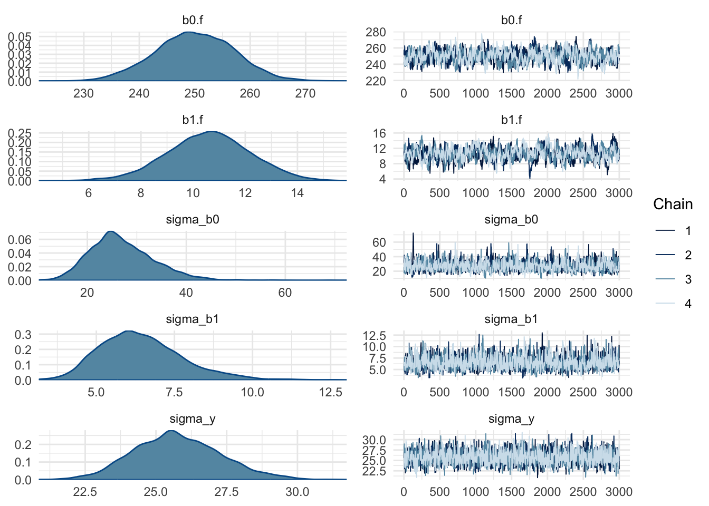

library(tidyverse)
library(nimble)
library(posterior)
library(bayesplot)
set.seed(123)
theme_set(theme_minimal())nimble_playground
Setup environment
Read data
data(sleepstudy, package = 'lme4')
head(sleepstudy)| Reaction | Days | Subject |
|---|---|---|
| 249.6 | 0 | 308 |
| 258.7 | 1 | 308 |
| 250.8 | 2 | 308 |
| 321.4 | 3 | 308 |
| 356.9 | 4 | 308 |
| 414.7 | 5 | 308 |
Specify joint model (likelihood + priors)
sleepCode <- nimbleCode({
for (i in 1:N) {
Reaction[i] ~ dnorm(mu[i], sd = sigma_y)
mu[i] <- (b0.f + b0.r[Subject[i]]) + (b1.f + b1.r[Subject[i]]) * Days[i]
}
# Priors for fixed effects (Population Level)
b0.f ~ dnorm(0, sd = 100)
b1.f ~ dnorm(0, sd = 100)
# Priors for random effects (Subject Level)
for (j in 1:J) {
b0.r[j] ~ dnorm(0, sd = sigma_b0)
b1.r[j] ~ dnorm(0, sd = sigma_b1)
}
# Priors for standard deviations (variance components)
sigma_b0 ~ T(dnorm(0, sd = 100), 0, ) # Half-normal
sigma_b1 ~ T(dnorm(0, sd = 100), 0, )
sigma_y ~ T(dnorm(0, sd = 100), 0, )
})Condition on data and sample from posterior
sleepData <- list(Reaction = sleepstudy$Reaction)
sleepConstants <- list(
N = length(sleepstudy$Subject),
J = length(unique(sleepstudy$Subject)),
Days = sleepstudy$Days,
Subject = as.numeric(factor(sleepstudy$Subject))
)
samples <- nimbleMCMC(
code = sleepCode,
constants = sleepConstants,
data = sleepData,
monitors = c("b0.f", "b1.f", "b0.r", "b1.r", "sigma_y", "sigma_b0", "sigma_b1"),
niter = 4000, nburnin = 1000, nchains = 4,
progressBar = FALSE
)Defining modelBuilding modelSetting data and initial valuesRunning calculate on model
[Note] Any error reports that follow may simply reflect missing values in model variables.Checking model sizes and dimensions [Note] This model is not fully initialized. This is not an error.
To see which variables are not initialized, use model$initializeInfo().
For more information on model initialization, see help(modelInitialization).Checking model calculations[Note] NAs were detected in model variables: b0.f, logProb_b0.f, b1.f, logProb_b1.f, sigma_b0, sigma_b1, sigma_y, b0.r, logProb_b0.r, b1.r, logProb_b1.r, mu, logProb_Reaction.[Note] Infinite values were detected in model variables: logProb_sigma_b0, logProb_sigma_b1, logProb_sigma_y.Compiling
[Note] This may take a minute.
[Note] Use 'showCompilerOutput = TRUE' to see C++ compilation details.running chain 1...running chain 2...running chain 3...running chain 4...samples <- as_draws(samples)
summary(samples)| variable | mean | median | sd | mad | q5 | q95 | rhat | ess_bulk | ess_tail |
|---|---|---|---|---|---|---|---|---|---|
| b0.f | 249.9937 | 249.9760 | 7.089 | 7.233 | 238.2117 | 261.5220 | 1.003 | 432.6 | 822.9 |
| b0.r[1] | 2.0854 | 1.9901 | 13.839 | 13.711 | -20.5120 | 24.7701 | 1.001 | 1440.2 | 2834.4 |
| b0.r[2] | -39.5105 | -39.3044 | 14.255 | 13.979 | -63.3356 | -16.1478 | 1.002 | 1387.8 | 2560.8 |
| b0.r[3] | -37.9154 | -37.7874 | 14.100 | 13.929 | -61.7131 | -14.9626 | 1.002 | 1413.9 | 3184.5 |
| b0.r[4] | 25.6699 | 25.3717 | 13.941 | 13.851 | 3.1182 | 48.8349 | 1.000 | 1274.6 | 2743.4 |
| b0.r[5] | 24.0653 | 23.7370 | 13.934 | 13.537 | 1.6497 | 47.3341 | 1.001 | 1225.1 | 2412.1 |
| b0.r[6] | 10.4202 | 10.1377 | 13.497 | 13.426 | -11.5446 | 32.9917 | 1.002 | 1286.4 | 2924.9 |
| b0.r[7] | 18.1181 | 17.9357 | 13.757 | 13.792 | -3.8423 | 41.1042 | 1.001 | 1219.7 | 2630.2 |
| b0.r[8] | -6.4624 | -6.3304 | 13.595 | 13.502 | -28.9249 | 15.5088 | 1.002 | 1428.0 | 3146.2 |
| b0.r[9] | 1.7911 | 1.7257 | 13.641 | 13.437 | -20.3738 | 24.1250 | 1.001 | 1462.7 | 3295.1 |
| b0.r[10] | 36.0952 | 35.7879 | 14.193 | 14.225 | 13.3816 | 60.0120 | 1.001 | 1077.3 | 2748.1 |
| b0.r[11] | -25.1405 | -25.0273 | 13.700 | 13.734 | -47.6967 | -3.1081 | 1.004 | 1428.9 | 3586.4 |
| b0.r[12] | -12.8616 | -12.7845 | 13.594 | 13.536 | -35.4374 | 9.1399 | 1.002 | 1354.8 | 3015.5 |
| b0.r[13] | 5.9719 | 5.8203 | 13.468 | 13.560 | -15.9570 | 28.0199 | 1.002 | 1281.0 | 3390.2 |
| b0.r[14] | 21.5396 | 21.3250 | 14.291 | 14.068 | -1.7774 | 45.3256 | 1.001 | 1161.2 | 3072.2 |
| b0.r[15] | 4.0686 | 4.0114 | 13.363 | 13.217 | -17.8824 | 26.2590 | 1.002 | 1363.3 | 3529.3 |
| b0.r[16] | -25.5523 | -25.4227 | 13.860 | 13.667 | -48.6466 | -2.6182 | 1.002 | 1167.1 | 3044.0 |
| b0.r[17] | 1.9530 | 1.8840 | 13.510 | 13.341 | -19.8357 | 24.3418 | 1.000 | 1401.8 | 3557.9 |
| b0.r[18] | 13.5945 | 13.3447 | 13.664 | 13.518 | -8.4871 | 36.3117 | 1.000 | 1345.4 | 2967.2 |
| b1.f | 10.6016 | 10.6213 | 1.591 | 1.559 | 7.9662 | 13.2088 | 1.007 | 326.3 | 615.4 |
| b1.r[1] | 9.3490 | 9.3154 | 2.781 | 2.715 | 4.8150 | 13.9885 | 1.001 | 937.0 | 2122.5 |
| b1.r[2] | -8.6547 | -8.6583 | 2.877 | 2.898 | -13.3489 | -3.9522 | 1.003 | 784.3 | 1921.9 |
| b1.r[3] | -5.5358 | -5.4979 | 2.843 | 2.835 | -10.2274 | -0.8488 | 1.004 | 793.0 | 1943.8 |
| b1.r[4] | -5.0677 | -5.0488 | 2.765 | 2.779 | -9.5776 | -0.5328 | 1.003 | 872.3 | 2193.0 |
| b1.r[5] | -3.2929 | -3.2995 | 2.701 | 2.696 | -7.7979 | 1.1202 | 1.003 | 1008.5 | 2164.6 |
| b1.r[6] | -0.4050 | -0.3954 | 2.717 | 2.698 | -4.9035 | 4.0258 | 1.002 | 980.2 | 2843.7 |
| b1.r[7] | -0.3382 | -0.3461 | 2.753 | 2.764 | -4.8336 | 4.2063 | 1.004 | 842.0 | 2395.3 |
| b1.r[8] | 1.0353 | 1.0329 | 2.713 | 2.678 | -3.4570 | 5.4855 | 1.003 | 819.0 | 2291.0 |
| b1.r[9] | -11.0199 | -11.0033 | 2.779 | 2.752 | -15.5909 | -6.5477 | 1.003 | 939.5 | 2189.6 |
| b1.r[10] | 8.5244 | 8.4639 | 2.797 | 2.810 | 3.9859 | 13.1796 | 1.002 | 993.3 | 2038.7 |
| b1.r[11] | 1.2937 | 1.2744 | 2.753 | 2.759 | -3.2319 | 5.8573 | 1.005 | 806.6 | 2579.9 |
| b1.r[12] | 6.7104 | 6.6711 | 2.754 | 2.767 | 2.2293 | 11.2688 | 1.005 | 820.2 | 1794.3 |
| b1.r[13] | -3.1690 | -3.1689 | 2.671 | 2.599 | -7.5756 | 1.2612 | 1.003 | 960.9 | 2194.7 |
| b1.r[14] | 3.5351 | 3.5265 | 2.756 | 2.771 | -0.8888 | 8.0399 | 1.003 | 1043.7 | 2846.2 |
| b1.r[15] | 0.8491 | 0.8180 | 2.714 | 2.721 | -3.5343 | 5.2878 | 1.001 | 826.3 | 2515.7 |
| b1.r[16] | 4.9374 | 4.9132 | 2.792 | 2.769 | 0.3238 | 9.6035 | 1.005 | 759.6 | 2001.5 |
| b1.r[17] | -1.0697 | -1.0885 | 2.712 | 2.679 | -5.5209 | 3.3640 | 1.002 | 840.9 | 2087.4 |
| b1.r[18] | 1.1593 | 1.1326 | 2.735 | 2.746 | -3.2940 | 5.6704 | 1.002 | 973.1 | 2478.4 |
| sigma_b0 | 27.0109 | 26.1909 | 6.551 | 6.075 | 17.7009 | 38.6698 | 1.002 | 1024.3 | 1403.1 |
| sigma_b1 | 6.4435 | 6.3093 | 1.337 | 1.267 | 4.5499 | 8.8844 | 1.002 | 1334.4 | 2046.6 |
| sigma_y | 25.7630 | 25.6813 | 1.541 | 1.549 | 23.3739 | 28.4004 | 1.001 | 2088.7 | 2383.6 |
pars <- c("b0.f", "b1.f", "sigma_b0", "sigma_b1", "sigma_y")
mcmc_combo(samples, pars = pars)